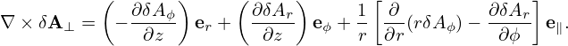

![∂δj∥ ∫ ∫ ∂δf
-∂t-+ q dvv∥(v∥e∥ + vD )⋅∇X δf − q dvv∥e∥ ⋅μ∇B ∂v∥-
∫ ( ) ∫ ( )
= − q dvv∥ vE + v∥δB-⊥ ⋅∇XF0 + q dvv∥ vE-+ δB⊥- ⋅μ∇B ∂F0-
∫ [( B0) ] v∥ B0 ∂v∥
-q vD- ∂F0-
−m q dvv∥ e∥ + v∥ ⋅δE ∂v ∥. (328)](nonlinear_gyrokinetic_equation359x.png)
Multiplying the linear drift kinetic equation (327) by qv∥ and then integrating over velocity space, we obtain
Consider the simple case that F0 does not carry current, i.e., F0(X,μ,v∥) is an even function about v∥. Then it is obvious that the integration of the terms in red in Eq. (328) are all zero. Among the rest terms, only the following term
![q ∫ ∂F 1
− --q dvv∥[(v∥e∥)⋅δE ]--0--
m ∂v∥v∥](nonlinear_gyrokinetic_equation360x.png) | (329) |
explicitly depends on δE. Using dv = 2πBdv∥dμ, the integration in the above expression can be analytically performed, giving
![q ∫ ∂F0 1
−m-q dvv∥[(v∥e∥)⋅δE]∂v-v-
2 ∫ ∥ ∥
= − q 2πBdv∥dμv∥δE ∥∂F0-
m ∂v∥
q2 ∫ ∫ ∂F0
= −m- 2πBd μδE∥ v∥-∂v-dv∥
2 ∫ ( ∫ ∥ )
= − q 2πBd μδE∥ 0− F0dv∥
m
q2
= m δE∥n0. (330)](nonlinear_gyrokinetic_equation361x.png)
Equation (331) involve derivatives of δf with respect to space and v∥ and these should be avoided in the particle method whose goal is to avoid directly evaluating these derivatives. Using integration by parts, the terms involving ∂∕∂v∥ can be simplified, yielding

 ⋅∇XF0 is written as
⋅∇XF0 is written as
![∫ ( )
− q dvv v δB-⊥- ⋅∇ F
∥ ∥ B0 X 0
∫ ( 2δB⊥ )
= − q 2πB0dv∥dμ v∥-B0- ⋅∇XF0
( ) ∫
= − q δB-⊥ ⋅B0∇X (v2∥F02πdv∥dμ)
( B0 ) [ ∫ ]
= − q δB-⊥ ⋅B ∇ 1- (mv2F dv)
B0 0 X B ∥ 0
( p∥0 )
= − qδB ⊥ ⋅∇X mB0- (335)](nonlinear_gyrokinetic_equation367x.png)
 | (336) |
where B∥⋆ = B0 (refer to my another notes). Using b ⋅∇× b ≈ 0, we obtain B∥⋆ ≈ B. Then vD is written
vD =  ∇× b + ∇× b +  b ×∇B0. b ×∇B0.
|
Using this and dv = 2πB0dv∥dμ, the term −q ∫ dvv∥vD ⋅∇Xδf is written as

|
| (339) |
which, for the isotropic case (p∥0 = p⊥0 = p0), is simplified to
 | (340) |
then Eq. (338) is written as